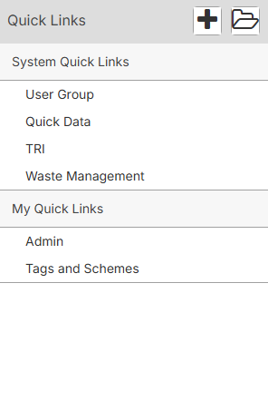
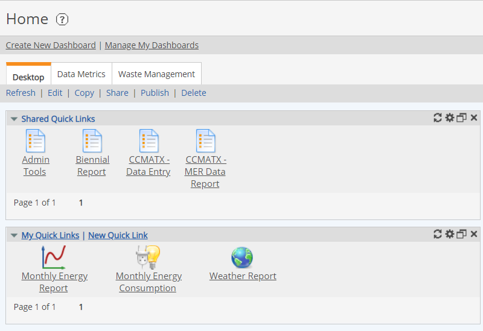

Quick Links make it easy for you to access the items and actions that you use most frequently Quick Links may be created to any page in the main Management System, as well as to external resources such as your company intranet or other management systems.
To view your Quick Links, click your user profile from the bottom of the main menu, then select Quick Links.
The Quick Links panel opens and you can view existing Quick Links.

Quick Links may also be displayed in the Portal on a Quick Links panel and on dashboards in the Management System.
The Shared Quick Links panel shows System Quick Links that have been set up by an administrator and published to you or a group to which you belong. System Quick Links may be also be used in the Portal.
The My Quick Links panel shows personal links that you may set up for yourself. You may create personal quick links and add them to this panel and the Quick Links menu, as desired. See My Quick Links.
